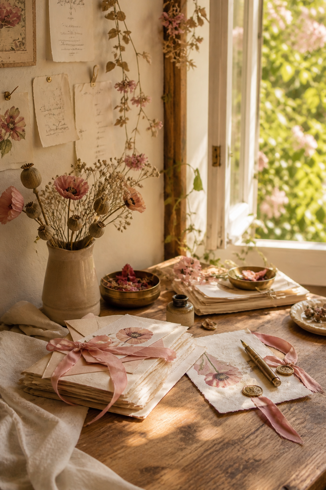
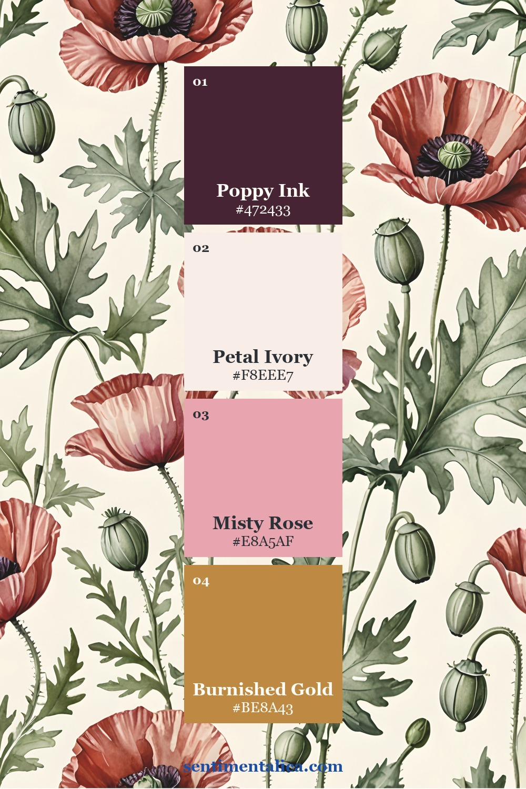
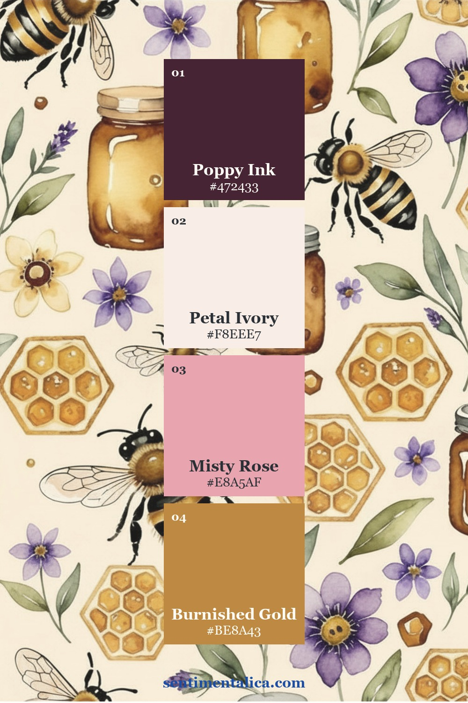
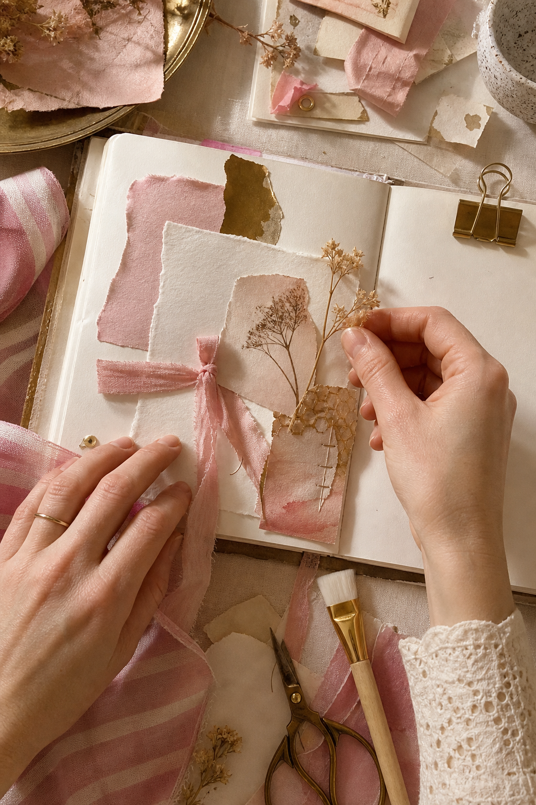
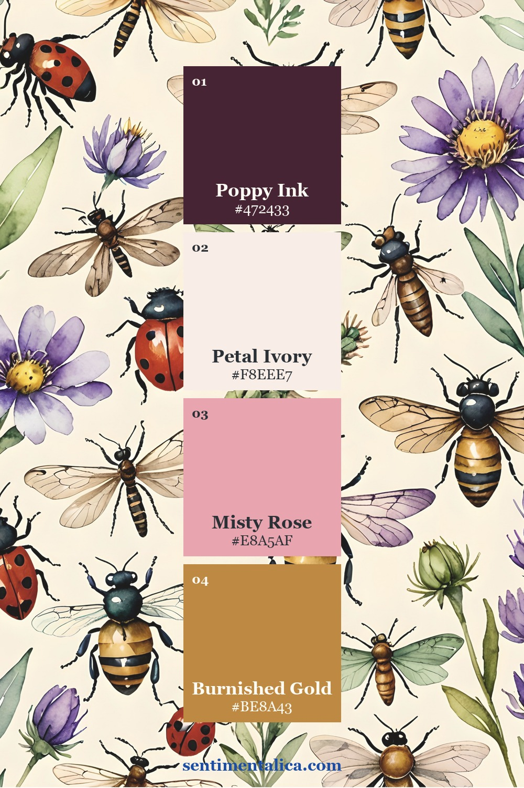

A soft floral journal page needs one firm decision: where should the eye rest? Without a dark anchor, pinks and creams can blend into a pleasant haze. Poppy Ink solves that problem, while Petal Ivory keeps the spread airy and Misty Rose supplies the seasonal softness.

The Petal Mist palette
Poppy Ink is the anchor, Petal Ivory is the light neutral, Misty Rose is the supporting tone, and Burnished Gold is the accent. Keep the ivory visibly dominant. Use the deep shade in flower centers, a thin mat, or an inked edge—not as a large background.

Choose one type of floral rhythm
A repeating botanical pattern is already energetic, so pair it with plain paper and one open label. If you use a single large flower instead, you can add a smaller patterned strip. Alternating scale is more important than matching every blossom.

Turn the palette into tactile layers
Translate Misty Rose into torn cotton, ribbon, or handmade paper. Use ivory for the journaling card and a translucent layer. Add gold as one fastener or painted line. The mixture of matte, translucent, and slightly reflective surfaces gives the pale colors definition.

Leave room for a real spring memory
Before decorating the center, write three lines: what was blooming, what the light looked like, and what you wanted to remember. Build the collage around those lines. This keeps the page from becoming only a color exercise.

See the palette across the collection


A quick soft-floral page plan
Use one floral background, one ivory card, one misty rose strip, one dark flower-center detail, and one gold clip. Keep the card removable if you want more writing space. A pocket made from vellum can soften the pattern without hiding it.
The Petal Mist commercial-use watercolor image pack provides coordinated floral artwork for backgrounds, cropped accents, and journal layers. Choose one showpiece image and let your own handwriting, fabric, and pressed materials complete the spread.
Image note: Atmospheric and process visuals in this article were created with AI and curated by Sentimentalica. The displayed collection pages are authentic listing artwork.